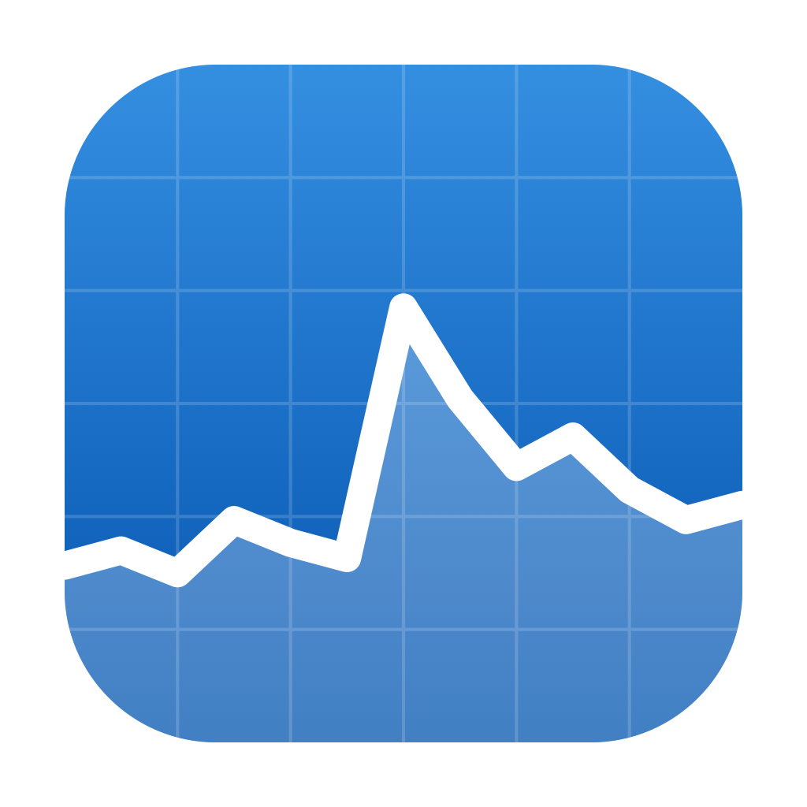
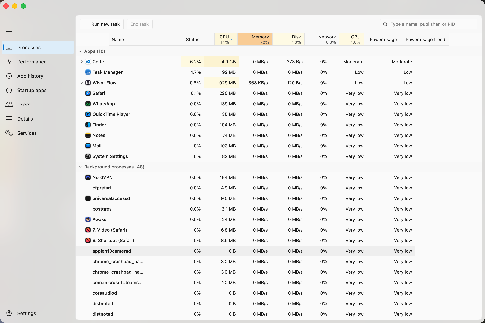

Task Manager for Mac
The Windows 11 Task Manager. Same seven tabs, same heatmap, same graphs — running natively on your Mac.
Download for macOSFree and open source · macOS 14+ · Apple Silicon and Intel · Source on GitHub

You already know how to use it
That is the entire point. If you spend your week on Windows and your weekend on a Mac, Activity Monitor makes you translate every instinct you have — different words, different layout, no heatmap. Here the columns, the right-click menu, the sort order and the colours are the ones your hands already expect.
Processes
The grouped tree, and the heatmap running yellow to red as things heat up.
Performance
Live CPU, memory, disk, network and GPU graphs, on the Windows grid.
App history
CPU time and network per app, accumulated across days.
Startup apps
Everything that launches at login. Switch it off.
Users
Who is signed in, and what they are running.
Details
The dense list — PID, threads, priority, path.
Services
launchd daemons and agents, the macOS equivalent.
Three things it cannot do
macOS publishes no API for these. Rather than show a number that looks right and is not, it shows nothing.
- GPU % per process — the overall GPU graph is live; the per-app column reads 0. Activity Monitor does not have it either.
- Startup impact — macOS never measures it.
- Set affinity — no such control exists on macOS. The menu item is visibly disabled, not quietly hidden.
Questions
Why does macOS say it cannot verify the app?
Because it is not notarized, which needs a paid Apple Developer account. Right-click the app → Open → Open. Once only, then it launches normally forever. Every line of source is on GitHub if you would rather build it yourself.
Why does it ask for my password?
Only if you want it to. macOS hides CPU for processes you do not own — about one in five, including WindowServer and kernel_task. A 150-line helper reads those stats, and installing it setuid-root takes your password once. It answers exactly two questions and never runs a command. It is the same mechanism /bin/ps has used for decades. Decline it and everything else still works.
Does it slow my Mac down?
It uses roughly 0.8% of an eight-core Mac while open, and nothing at all when closed — there is no menu bar agent and no background daemon.
Why do the numbers differ from Activity Monitor?
Windows normalises CPU across all your cores, so the column maxes out at 100%. Activity Monitor reports per-core, so one busy process can read 800% on an eight-core Mac. This app follows Windows. If a number differs by roughly your core count, that is why.
Does it work on Intel?
Yes. Apple Silicon and Intel, macOS 14 and later. Nothing is tuned to one chip.
Or build it yourself
git clone https://github.com/yatindma/task-manager-for-mac.git
cd task-manager-for-mac
./build.shSwift 6 and SwiftUI, about 5 MB. No packages to install, nothing to configure, zero third-party dependencies. You will need Xcode present — build.sh finds it on its own.